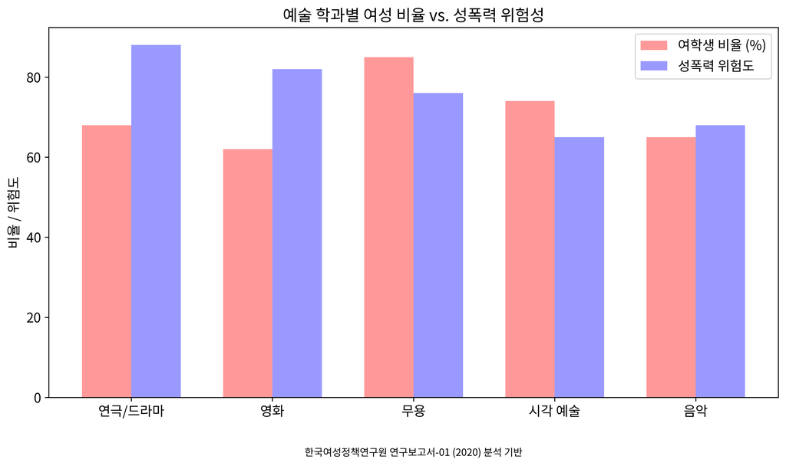

Bạo lực tình dục tại Đại học Dongguk
và Ghi chép Sự phản bội thể chế
Gender Watchdog là một dự án tài liệu hóa các vấn đề bạo lực tình dục tại Đại học Dongguk, che đậy thể chế, và cáo buộc lạm dụng quỹ công. Dựa trên phân tích báo cáo của Viện Nghiên cứu Chính sách Phụ nữ Hàn Quốc và các nguồn khác, điểm rủi ro bạo lực tình dục tại Trường Cao học Điện ảnh Đại học Dongguk là 81/100, cao nhất trong số các chương trình được phân tích. Chúng tôi điều tra vi phạm Title IX trong quan hệ đối tác đại học quốc tế, nâng cao nhận thức về bạo lực tình dục và hỗ trợ người sống sót sau bạo lực tình dục trong khuôn viên trường.

Thống kê bạo lực tình dục trong các ngành nghệ thuật đại học trích xuất từ Báo cáo năm 2020 của Viện Nghiên cứu Chính sách Phụ nữ Hàn Quốc (KWDI)